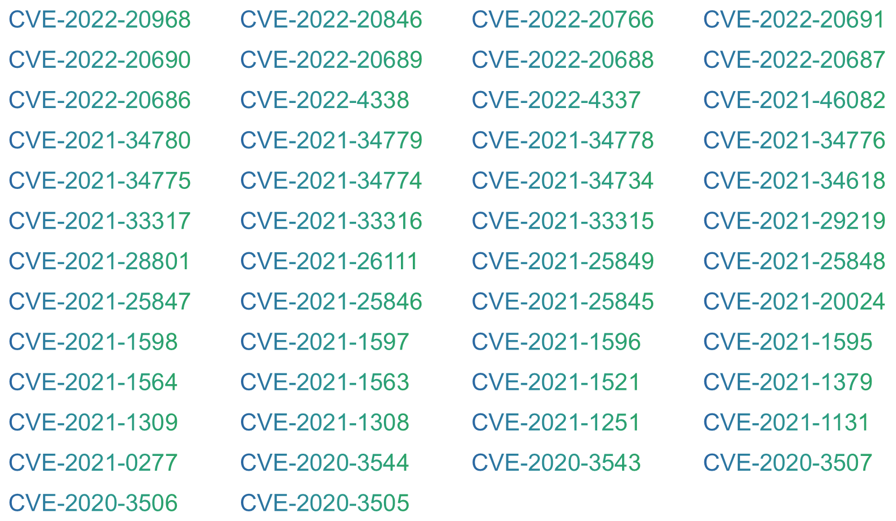
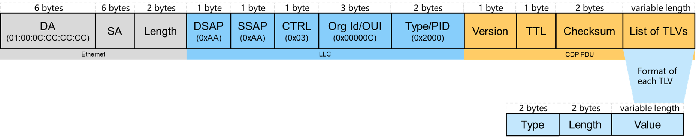
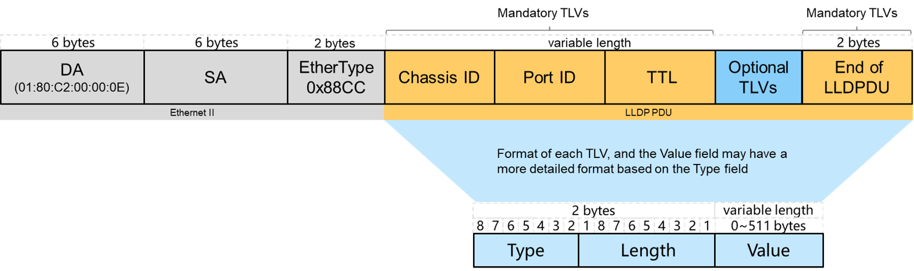
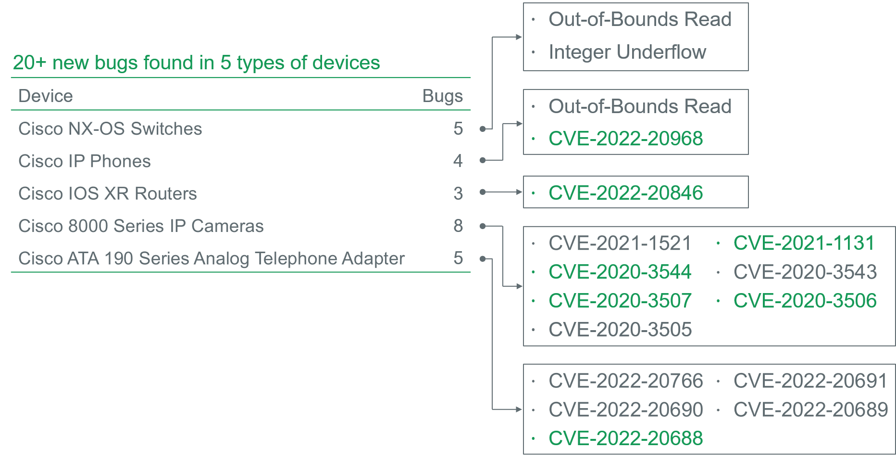
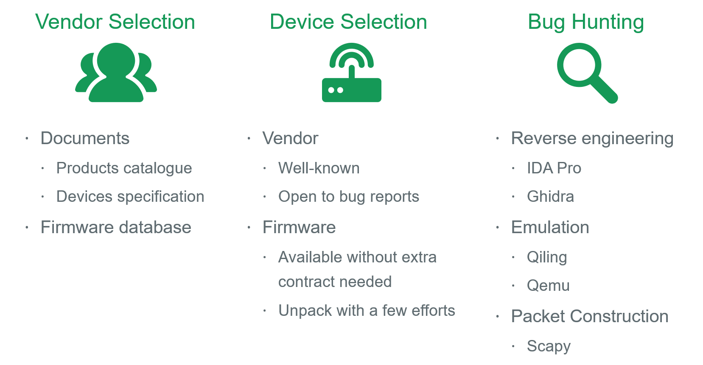
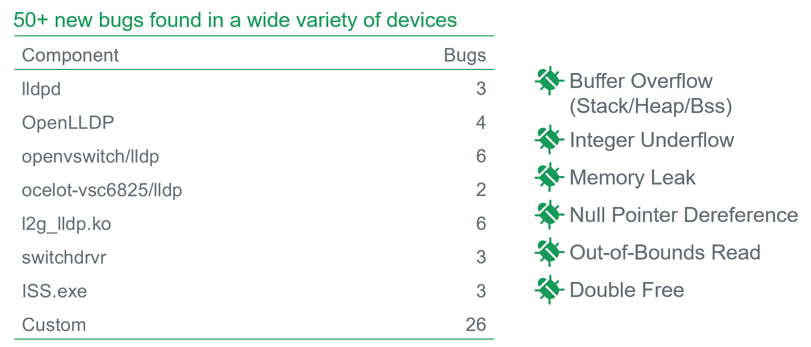

What’s LCDPwn?
LCDPwn is a series of zero-day vulnerabilities found in two layer-2 protocols called Cisco Discovery Protocol (CDP) and Link Layer Discovery Protocol (LLDP), which affects several CDP and LLDP components. Due to these components being widely used, as a result, nearly 70 kinds of network devices from 30 well-known vendors are vulnerable. There is a high probability that the actual impact would be much larger.
Some vulnerabilities can be used to achieve code execution on the affected devices. A rough classification of these vulnerabilities are as follows.
- Out-of-Bounds Read/Write
- Buffer Overflow (Stack/Heap/Bss)
- Integer Overflow/Underflow
- Memory Leak
- NULL Pointer Dereference
- Reachable Assertion
The following are the assigned CVE IDs at the moment.

And the affected vendors are as follows.
Background
The CDPwn research conducted by the Armis labs in 2020, sheds light on the severe impact of attack surface exposed by a proprietary layer-2 protocol called CDP. It contains 5 zero-day vulnerabilities, four of which would be used to achieve code execution. And it affects a wide array of Cisco products, including Cisco switches, routers, IP cameras and IP phones.
While learning CDPwn research, several questions came to our mind.
- Were these vulnerabilities well fixed?
- Was there any variant?
- What about other vendors, or it’s just Cisco’s own business?
To answer these questions, our journey started.
Layer-2 Discovery Protocol
Cisco Discovery Protocol (CDP) and Link Layer Discovery Protocol (LLDP) are the focus of our LCDPwn research. Actually, besides these two protocols, there are other vendor specific discovery protocols, such as Extreme Discovery Protocol (EDP) for Extreme devices, NETGEAR Switch Discovery Protocol (NSDP) for NETGEAR devices, MikroTik Neighbor Discovery Protocol (MNDP) for MikroTik devices, and so on.
Cisco Discovery Protocol
Cisco Discovery Protocol is a Cisco proprietary protocol, and mainly used in Cisco manufactured devices. It’s used for collecting directly connected neighbor device information, like hardware, software, device name details and so on.
The CDP protocol has two versions. At the moment, the v2 version is the most recent release, and provides more features than version v1. Therefore, it’s more prevalent on Cisco devices.
The following is an example of CDP frame format.

Link Layer Discovery Protocol
Compared to CDP protocol, LLDP protocol is more general and vendor-independent. And since LLDP is an open standard, it’s supported on most vendors’ network devices.
The following is an example of LLDP frame format.

Learn from CDPwn
Those vulnerabilities covered in CDPwn research resided in the processing of CDP packets. When learning this research, we started by analyzing the 5 zero-day vulnerabilities. During this process, we are familiar with the code for parsing CDP packets, and learnt a few vulnerabilities patterns.
- Lack of TLV length field validation
- Improper use of protocol_type variable
- Lack of number_of_address field validation
- Lack of power request count validation
- Improper use of device_id/port_id/software_version value
- Discrepancy between the size used for allocation and copy operation
Then we conducted an in-depth analysis against the code to parse CDP packets again, and found another 20 bugs in 5 types of Cisco devices, including NX-OS Switch, IP Phone, IOS XR Router, IP Camera, and Analog Telephone Adapter. Among them, some can be used to achieve code execution.

From CDP to LLDP
We have learnt a few vulnerability patterns from both the original vulnerabilities and newly found vulnerabilities. What’s more, we have a better understanding of the CDP protocol format.
What about LLDP protocol? Compared to CDP protocol, LLDP protocol is more general and vendor-independent. It can be used on most vendors’ network devices. With the knowledge obtained from the previous stage, we continue to investigate the implementations for parsing LLDP packets in network devices.
Research Methodology

Research Results
Firstly, several common LLDP components are found in firmware from a wide variety of networks, and vulnerable. Among them, the first four are from open source projects, and the last three are closed source components.
- lldpd
- OpenLLDP
- openvswitch/lldp
- ocelot-vsc6825/lldp
- l2k_lldp.ko
- switchdrvr
- ISS.exe
Secondly, nearly 50 bugs are found in a wide variety of devices. Among them, some are common in LLDP components, while others are introduced by the vendor.

Research Limitations
Since static analysis is our main approach, although the device firmware contains affected LLDP components, it might not be actually used on the device. Fortunately, when we report these bugs to vendor and communicate with them, most of bugs are valid and have been fixed.
In addition, due to our target selection strategy, some vendors and devices may be omitted. There is a high probability that the actual impact would be much larger.
Recommendation
All the vulnerabilities have been reported to the corresponding vendors and have been fixed. If you (or your organization) own some of the affected devices from these vendors, please update to the latest version if possible.
Besides, according to the LCDPwn research:
- Variant analysis is cool, and can be done on a broader level, such as looking into the implementation of similar protocols/components, or the same implementation on different devices/systems.
- Software Bills of Materials (SBOMs) are important in software security and software supply chain.
- Keep components up-to-date, and avoid using outdated components if possible.
- Pay attention to the OEM software, since the impact will be amplified if vulnerability exists in the OEM software.
Q & A
Why it is called LCDPwn?
The CDPwn research is the origin of our work. Since these vulnerabilities are related to CDP and LLDP protocol, so we named our research as LCDPwn (aka Learn from CDPwn) similarly.
Who conducted the LCDPwn research?
cq674350529
What’s the difference between the CDPwn and LCDPwn research?
The CDPwn research is the origin of our work. Based on the CDPwn research, on the one hand, we conducted an in-depth analysis against the code to parse CDP packets again, and found another 20+ bug on Cisco devices, including IOS XR routers, Nexus switches, IP Phones, IP Cameras and so on.
On the other hand, since CDP is a Cisco proprietary protocol used in Cisco-manufactured devices, LLDP protocol is more general and vendor-independent. It can be used on most vendors’ network devices. With the obtained knowledge, we continued to investigate the implementations for parsing LLDP packets in network devices from well-known vendors. As a result, several common LLDP components are found in firmware from a wide variety of networks, and nearly 50 bugs are found in a wide variety of devices.
What’s the requirements to trigger/exploit these vulnerabilities?
The CDP and LLDP are layer-2 broadcast protocol, so you should be network-adjacent to the affected devices. In addition, no authentication is needed.
What kind of devices are affected?
As for the CDP protocol, it’s supported and enabled on most Cisco’s devices in default. According to our LCDPwn research, those devices like Nexus Switch, IP Phone, IP Camera, IOS XR Router, and Analog Telephone Adapter are affected. Due to the contract limitations, we are only able to get firmware for these devices and evaluate them.
As for the LLDP protocol, it’s widely supported on network switch. Also, other devices like router, access point, wireless controller, IP camera and VOIP gateway may support LLDP feature. Besides, the virtual switch functionality provided by Open vSwitch also supports LLDP feature. Moreover, on some systems like Ubuntu and FreeBSD, LLDP feature can be supported by installing specific LLDP package. According to our LCDPwn research, the above cases are all affected.
Am I affected by these vulnerabilities?
There is a high probability that you (or your organization) are affected, if :
- own some network devices from these vendors, and the CDP/LLDP feature is supported and enabled
- own some network devices using affected CDP/LLDP components, and the CDP/LLDP feature is supported and enabled
Besides, other network devices, which not covered in LCDPwn research and support CDP/LLDP feature, may be affected.
References
- CDPWN
- Cisco Discovery Protocol (CDP)
- Link Layer Discovery Protocol (LLDP)
- lldpd
- OpenLLDP
- openvswitch/lldp
- ocelot-vsc6825/lldp/
Appendix: Security Advisory/Change Log
As for some vendors, there are no security advisory or change log available.